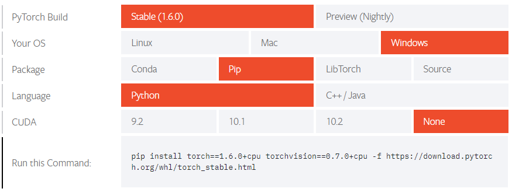
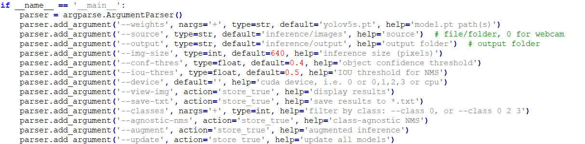
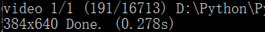
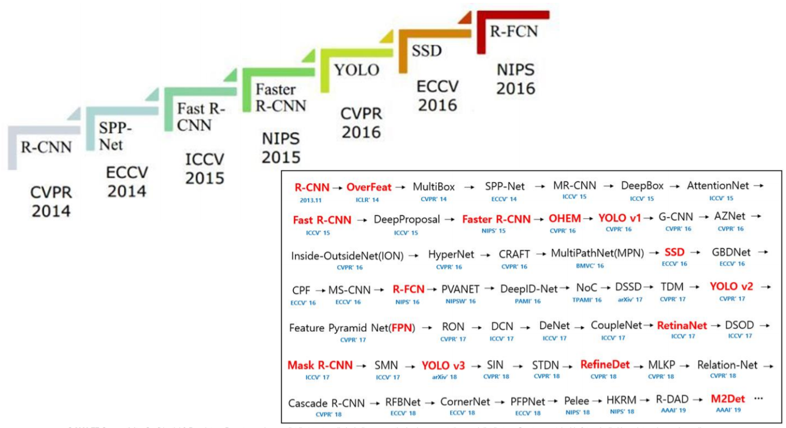

前言
计算机视觉在生活中已经成为了一个不可或缺的部分，下面就来总结一下我过去所学的那些关于Opencv的知识
1.Opencv环境搭建
准备工作如下
安装Python
安装pip插件
安装相关依赖包：numpy等
pip install opencv-python python import cv2 cv2.__version__
2.Opencv教程
2.1打开摄像头
import cv2
capture = cv2.VideoCapture(0)
#调用电脑默认摄像头
capture.open(0)
#打开电脑默认摄像头
while(capture.isOpened()):
ret,frame = capture.read()
#ret调用成功或失败，frame获取到的画面是一个numpy数组
cv2.imshow('frame',frame)
#展示摄像头所捕获的画面，第一个参数是窗口名
key_=cv2.waitKey(60)
#每60ms获取按键键值
print(key_)
if key_ == 27:#这里27是Esc对应的键值
break
capture.release()
#关闭摄像头
cv2.destroyAllWindows()
#关闭窗口上面是一个简单的调用摄像头的案例，其中键盘对应键值与ASCII有关
2.2调用边缘检测
#边缘检测
import cv2
# 回调函数，x表示滑块的位置，本例暂不使用
def nothing(x):
pass
capture = cv2.VideoCapture(0)
cv2.namedWindow('frame')
cv2.createTrackbar('MAX', 'frame', 0, 255, nothing)
cv2.createTrackbar('MIN', 'frame', 0, 255, nothing)
while(True):
MAX = cv2.getTrackbarPos('MAX', 'frame')
MIN = cv2.getTrackbarPos('MIN', 'frame')
ret, frame = capture.read()
edges = cv2.Canny(frame, MIN, MAX) # canny边缘检测
teer = np.dstack((edges,edges,edges))
cv2.imshow('frame', edges) # 展示摄像头所捕获的画面
cv2.imshow('teer', teer) # 展示摄像头所捕获的画面
if cv2.waitKey(1) == 27:
break
capture.release()
#关闭摄像头
cv2.destroyAllWindows()
#关闭窗口上面是一个自带滑块可调区间的边缘检测程序
2.3笑脸检测
import cv2
# 载入人脸检测器、眼睛检测器、微笑检测器三个级联检测器
face_cascade = cv2.CascadeClassifier(cv2.data.haarcascades+'haarcascade_frontalface_default.xml')
eye_cascade = cv2.CascadeClassifier(cv2.data.haarcascades+'haarcascade_eye.xml')
smile_cascade = cv2.CascadeClassifier(cv2.data.haarcascades+'haarcascade_smile.xml')
# 调用摄像头
cap = cv2.VideoCapture(0)
while(True):
# 获取摄像头拍摄到的画面
ret, frame = cap.read()
faces = face_cascade.detectMultiScale(frame, 1.3, 2)
img = frame
for (x,y,w,h) in faces:
# 画出人脸框，蓝色，画笔宽度微
img = cv2.rectangle(img,(x,y),(x+w,y+h),(255,0,0),2)
# 框选出人脸区域，在人脸区域而不是全图中进行人眼检测，节省计算资源
face_area = img[y:y+h, x:x+w]
## 人眼检测
# 用人眼级联分类器引擎在人脸区域进行人眼识别，返回的eyes为眼睛坐标列表
eyes = eye_cascade.detectMultiScale(face_area,1.3,10)
for (ex,ey,ew,eh) in eyes:
#画出人眼框，绿色，画笔宽度为1
cv2.rectangle(face_area,(ex,ey),(ex+ew,ey+eh),(0,255,0),1)
## 微笑检测
# 用微笑级联分类器引擎在人脸区域进行人眼识别，返回的eyes为眼睛坐标列表
smiles = smile_cascade.detectMultiScale(face_area,scaleFactor= 1.16,minNeighbors=65,minSize=(25, 25),flags=cv2.CASCADE_SCALE_IMAGE)
for (ex,ey,ew,eh) in smiles:
#画出微笑框，红色（BGR色彩体系），画笔宽度为1
cv2.rectangle(face_area,(ex,ey),(ex+ew,ey+eh),(0,0,255),1)
cv2.putText(img,'Smile',(x,y-7), 3, 1.2, (0, 0, 255), 2, cv2.LINE_AA)
# 实时展示效果画面
cv2.imshow('frame2',img)
# 每5毫秒监听一次键盘动作
if cv2.waitKey(5) & 0xFF == ord('q'):
break
# 最后，关闭所有窗口
cap.release()
cv2.destroyAllWindows()
上面是一个微笑检测的程序，检测效果一般
2.4图片处理
import cv2
# 读入本地图像文件
img = cv2.imread('logo.png')
# 在窗口中显示图像
cv2.imshow("Display window", img)
# 获取键盘按键动作，如果按下s键，就将图像保存至本地
k = cv2.waitKey(0) # 0表示永久等待键盘按键，15表示等待15毫秒
if k == ord("s"):
cv2.imwrite("saved_img.png", img)
cv2.destroyAllWindows()
简单的导入导出图片
2.5捕获摄像头画面
下面调用图像和摄像头，这是较为完整严谨的写法
import cv2
# 读入本地图像文件
img = cv2.imread('no_exist.png')
# 校验图像是否导入成功，如果导入失败，就输出提示
if img is None:
print("未能读入图像，请检查图像文件路径是否正确")
# 在窗口中显示图像
cv2.imshow("Display window", img)
# 获取键盘按键动作，如果按下s键，就将图像保存至本地
k = cv2.waitKey(0) # 0表示永久等待键盘按键，15表示等待15毫秒
if k == ord("s"):
cv2.imwrite("saved_img.png", img)
cv2.destroyAllWindows()在实际场景中，如果图片路径没有写对，那么会报出错误，所以我们要对其进行一个人性化的处理
import cv2
# 捕获摄像头，传入摄像头索引号，默认摄像头索引为0
cap = cv2.VideoCapture(0)
# 校验摄像头是否捕获成功，如果未成功则输出提示
if not cap.isOpened():
print("无法打开摄像头")
exit()
# 无限循环，直到触发break跳出
while True:
# 获取摄像头捕获的画面帧，返回ret和frame
# ret的True/False反映是否捕获成功，frame是画面
ret, frame = cap.read()
# 校验画面帧是否正确捕获，如果未成功则输出提示，跳出循环
if not ret:
print("无法获取画面帧")
break
# 对画面帧进行处理
# 这里是将画面转为灰度图
gray = cv2.cvtColor(frame, cv2.COLOR_BGR2GRAY)
# 在窗口中显示处理之后的画面
cv2.imshow('frame_window', gray)
# 获取键盘按键动作，如果按下q键，就跳出循环
if cv2.waitKey(1) == ord('q'):
break
# 关闭摄像头
cap.release()
# 关闭所有窗口
cv2.destroyAllWindows()这里将视频内容进行了一个灰度化处理
2.6打开视频
import cv2
#打开一个视频,并且逐帧播放
capture = cv2.VideoCapture('000.mp4')
#判断摄像头或视频是否读取，成功返回Ture
while(capture.isOpened()):
temp = capture.get(cv2.CAP_PROP_FRAME_COUNT) #获取视频总帧数
while(temp):
ret, frame = capture.read()
if not ret:
print("无法获取画面")
break
gray = cv2.cvtColor(frame, cv2.COLOR_BGR2GRAY)#转化为灰度图的形式
cv2.imshow('frame', gray)
temp = temp - 1 #播放一次帧数减一
if cv2.waitKey(30) == ord('q'):#30表示暂停时间，越小越快
break
break2.7录制视频保存
import cv2
capture = cv2.VideoCapture(0)
outfile = cv2.VideoWriter('output.avi', cv2.VideoWriter_fourcc(*'MJPG'), 25.0, (640, 480))#第一个参数表示视屏录制之后的位置，第二个参数是指编码格式如mjpg格式 cv2.VideoWriter_fourcc(*'MJPG') 第三个是帧率，第四个帧大小，第五个是否彩色
capture.open(0)
while(capture.isOpened()):
ret,frame = capture.read()#ret调用成功或失败，frame获取到的画面是一个numpy数组
outfile.write(frame)#写入文件
cv2.imshow('frame',frame)#展示摄像头所捕获的画面，第一个参数是窗口名
key_=cv2.waitKey(60)#每60ms获取按键键值
print(key_)
if key_ == 27:#这里27是Esc对应的键值
break
capture.release()#关闭摄像头
cv2.destroyAllWindows()#关闭窗口3.1Yolo v1技术概要
目前YoLo已经更新到v5版本，而想要读懂YoLo我们需要从最基础的v1来看
YoLo是把目标检测作为回归问题去解决的
传统的模型需要先提取候选框，对每一个候选框逐一的甄别进行分类和回归
以RCNN为例先提取出两千个候选框在逐一的对每个候选框进行甄别，非常的耗时费力
而YoLo不一样，它是单阶段的，只需要看一次，直接将图片送入网络就可以得出结果
通过阅读YoLo的论文我们可以知道，YoLo是将一张图片分成一个s*s的网格，如论文上那个狗和自行车的例子，它分成了七乘七的网格，每一个网格又能预测出B个bounding box，如果在训练过程中一个标签落到了哪一个网格，那就由那个网格产生的bounding box去预测这个物体，而究竟是用这B个bounding box中的哪一个去预测呢？就是由这B个bounding box中IOU最大重合度最大的框去负责预测，网络就会产生这么一个结构7×7×（5×B+C），就是每个网格都会产生两个bounding box，每个bounding box都有五个参数分别是（x,y,h,w,c）框线粗细表示C的大小，每一个格子又会产生类别的概率，对得到的值进行后处理，比如非极大值抑制，就能的到我们最终的目标检测结果了，这就是YoLo的整个过程
论文中展示的过程是正向推断过程，而哪一个框预负责预测某个物体是训练的过程，训练过程是监督学习，有人工标注的矩形框的中点落在哪个格子里，就由哪个格子产生的bounding box去预测这个物体
YoLo v1的网络结构是一个全卷积网络，全部是由卷积神经网络构成的，中间交替使用了1×1和3×3卷积，总共有24层卷积提取图像特征，再由两个全连接层回归得到一个7×7×30的tensor，7×7意味图像分割成7×7的网格，30表示每一个各自产生两个bounding box，而每一个bounding box有五个元素，每一个格子预测二十个类别就是10+20=30
由于YoLo是关注图片的全部信息的，而Fast R-CNN只能看到RoI区分背景能力差，经过对比我们可以知道，区分背景和物体的能力强，但精确定位较差，而且YoLo的泛化性特别强，哪怕是在自然界中训练好的模型也能用于艺术品
3.2YoLo v5示例
进入YoLo v5的github页面
将目标下载
找到下载目录并进入
使用Win+R打开命令行，cd到对应目录
运行如下命令
python detect.py --source 0 --weights weights/yolov5s.pt如若报错，根据内容安装对应支持包即可
如：
pip install tqdmtorch包下载不下来可以访问官网选择对应的版本系统下载即可

想要关闭可以按q键退出，注意要将输入法调成英文，检测速度速度由个人电脑配置决定
这里我们来看一下它的源码的这个地方：

介绍一下部分参数的作用：
–weights 权重，可以使用默认权重文件和自己训练好的权重文件
–source 视频来源
–output 预测结果存放地址
–img-size 图片大小
–conf-thres 目标执行度阈值
–iou-thres 区域交并比：重叠区域和并集区域的比值
–device 使用CPU or GPU
–classes 类别
下面我们来尝试使用一个视频来做一个演示
命令如下：
python detect.py --source 相对路径/文件名.mp4 --weights weights/yolov5s.pt --output 相对路径/文件名.mp4这里我们可以看到我们视频已处理帧数和总帧数，并且还有处理每一帧所耗费的时间

这里我是用CPU去跑的，所以速度很慢，如果想中途中断可以使用Ctrl+C中断，中断之后已处理的图像也会被保存下来，不过会有一些问题
3.3使用YoLo v5训练自己的训练集
建立自己的数据集，这里举一个简单的栗子
标注软件建议使用Labelimg
操作说明，a上一张图，d下一张图，w化框格，可以用鼠标来调整，选择Yolo格式输出
标签文件：
第一列类别
第二列左上角坐标
第三列框住部分占总图片的比例
第四列宽度
第五列高度
以上都是归一化的值
每一个TXT都是一个图片上所有框的信息
图片分为三个文件夹
训练集：用于模型拟合的数据样本
验证集：是模型训练过程中单独留出的样本集，它可以用于调整模型的超参数和用于对模型的能力进行初步评估
测试集：用来评估模最终模型的泛化能力。但不能作为调参、选择特征等算法相关的选择的依据
比喻一下就是
训练集————学生的课本，学生 根据课本里的内容来掌握知识。
验证集————作业，通过作业可以知道 不同学生学习情况、进步的速度快慢。
测试集———–考试，考的题是平常都没有见过，考察学生举一反三的能力。
训练使用train.py，同时指定部分参数，data.yaml文件：里面有训练集和验证集图像的位置，类别数量和类别名；模型.yaml文件：需要根据不同训练x、s、m、l文件分别做修改，修改nc类别数，anchors可以使用聚类的方法去修改，当然这里并不建议自己修改
yaml文件可以使用Notepad++就可以打开和修改，当然也可以使用自带文本编辑器，不过这里不建议使用自带文本编辑器
总之，嫌麻烦的可以使用别人的训练集
官网上有相关教程，这里就不做更多介绍了
4.1关键点检测
关键点检测多用于检测摔倒、体育动作指导、肢体语言理解、步态身份识别、动作捕捉、动作控制、3D试衣等等场景
下面只聊一聊简单的关键点检测算法
人体关键点检测是个回归问题，这个和之前的YoLo有些相似，不过我们人体关键点检测有些限制，比如说一般人是不可能出现两个头啊六条腿之类的
关键点检测其实和目标追踪有些想像
这里顺便介绍一下计算机视觉的部分知识
卷积操作就是将卷积核在元组上滑动并且分别点乘，就会得到卷积后的元组
多通道的卷积操作就是用多通道的卷积核进行操作
池化是把大的元组变成小的元组，可以取最大值和平均值分为最大池化和平均池化，池化可以融合汇总特征，防止过拟合，引入平移不变性起到模糊的效果，卷积神经网络就是将卷积层与池化层交替进行最后加上全连接层和输出层构件的既可以二分类也可以多分类
目标检测方法包括两种
单阶段方法，速度快准确率低，代表：YoLo、SSD及其变种
两阶段方法，速度慢需要找出候选框，再在候选框上进行目标检测回归，准确率高，代表：SPP-Net、R-CNN、Fast-R-CNN、Faster-R-CNN及其变种
单阶段已经介绍过了，两阶段以R-CNN为例，现在目标图片上选出两千个左右的候选框，这两千多个候选框用的是选择性搜索方法，缩放成同样的大小，在分别送入神经网络中进行分类和回归，分类SVMs，回归Bbox reg；这样的速度很慢

演变过程：

说回正题
人体姿态估计技术：提取图像中人体的关节关键点、脸部关键点、手势关键点，构建骨架，识别姿态
难点：多人、姿态复杂、视频分析、三维重构
传统的人体姿态估计需要人工构造特征，采用”基于模型“的方法
深度学习大规模应用后，采用端到端的表示学习，通过数据驱动的方法自动化构建特征
分为从上倒下：先挑出人，再检测
从低而上：先把所有关节找出来，在通过一定的准则来区分不同的人
人体姿态估计的经典解决方案
卡耐基梅隆大学的OpenPose
暂时先更新到这里，后续再继续补充（由于电脑配置较低实在是有些捉襟见肘）